One day, design received a request from an external team. Their clients had a problem — and a solution had already been proposed: a mockup. The ask for design was straightforward: make it look better.
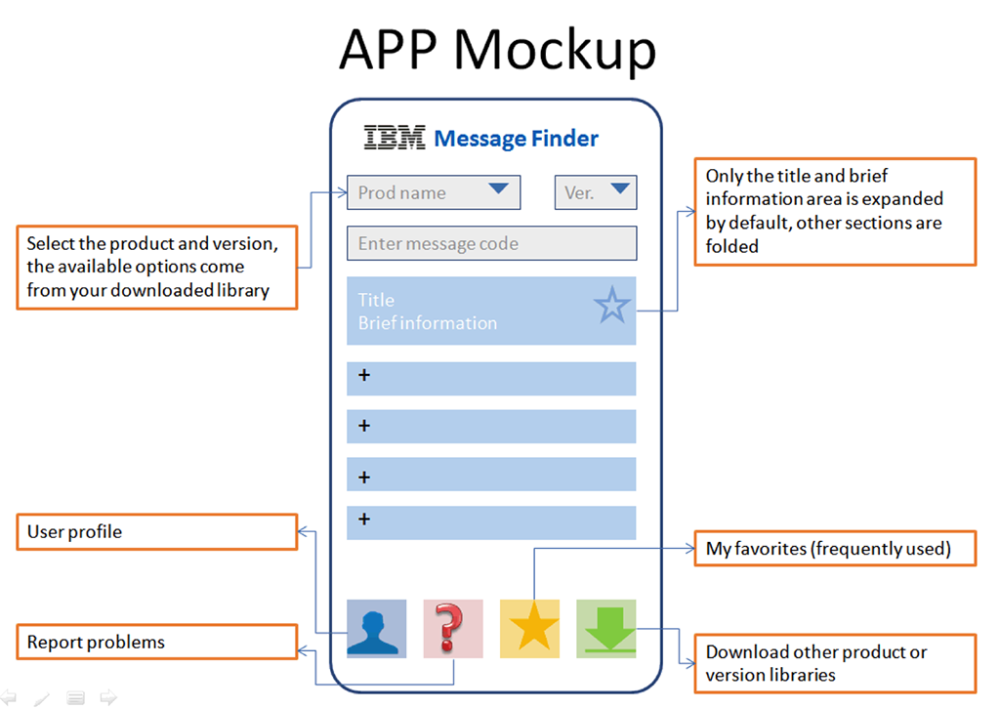
Building an app may be an obvious response, but it is not a silver bullet. Why do people need this app? What problem are we actually trying to solve?
I organised a short IBM Design Thinking workshop and adapted the format so non-designers could engage with it quickly. The goal was to create enough shared understanding for the team to question the existing direction.
Using personas, empathy maps, and an AS-IS journey map, the team began to see the problem differently — uncovering gaps and opportunities that had previously gone unnoticed. It became clear that the initial solution might not be the right one.
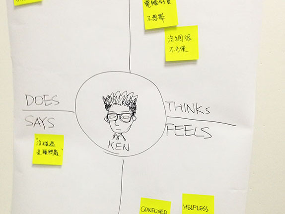
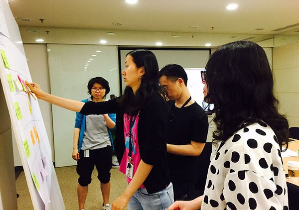
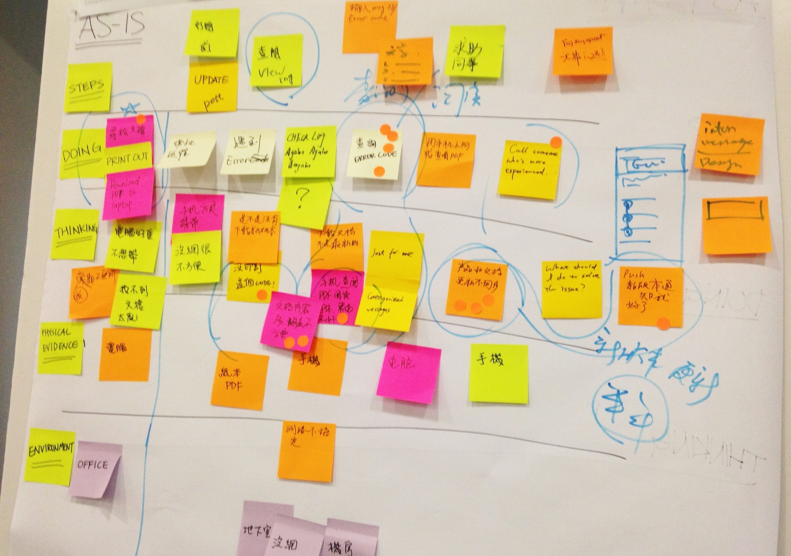
The strongest signal came afterwards:
a non-designer colleague took the AS-IS map into client conversations. The artefacts had become a shared decision-making tool.
By mapping the user journey and validating it with client feedback, the team identified a fundamental issue: the current platform was not designed for a mobile-first experience.
The direction became clear — redesign the information architecture so users can find what they need within three taps, on mobile.
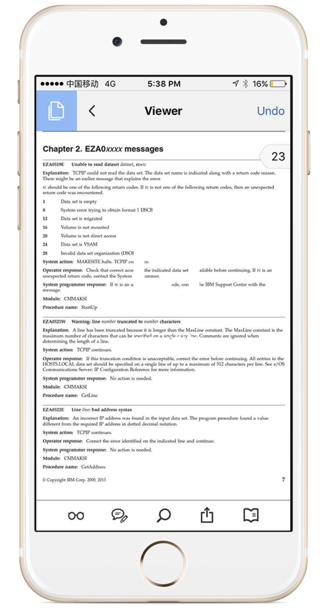
I redesigned the information architecture to organise content around user tasks rather than internal logic. I then translated that structure into mobile-first flows and interfaces, aligned with IBM Design Language.
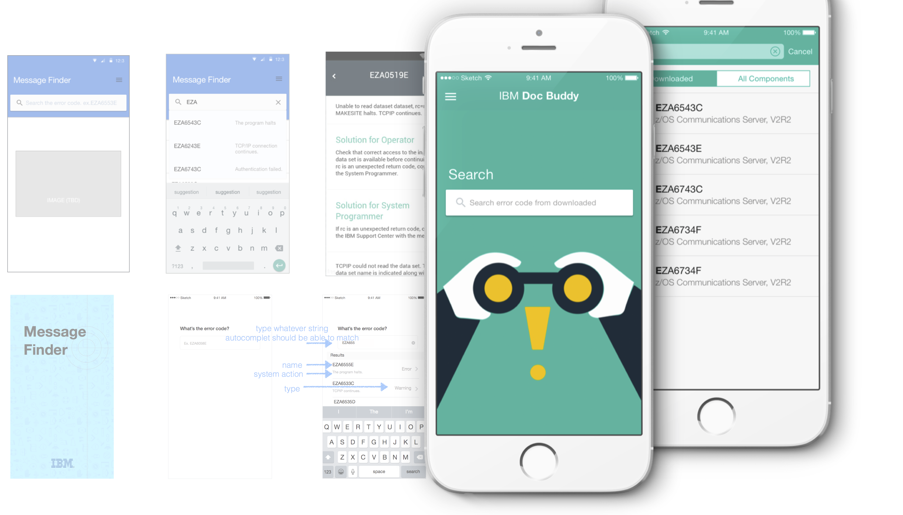
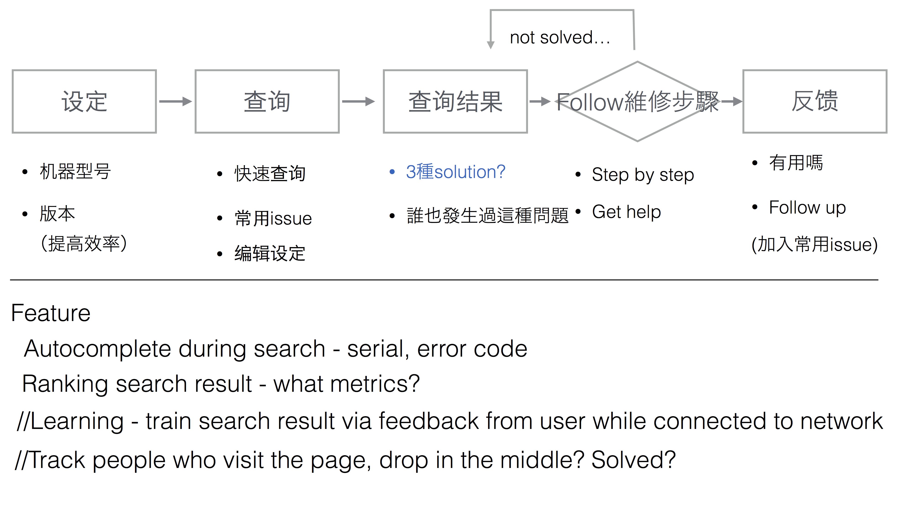
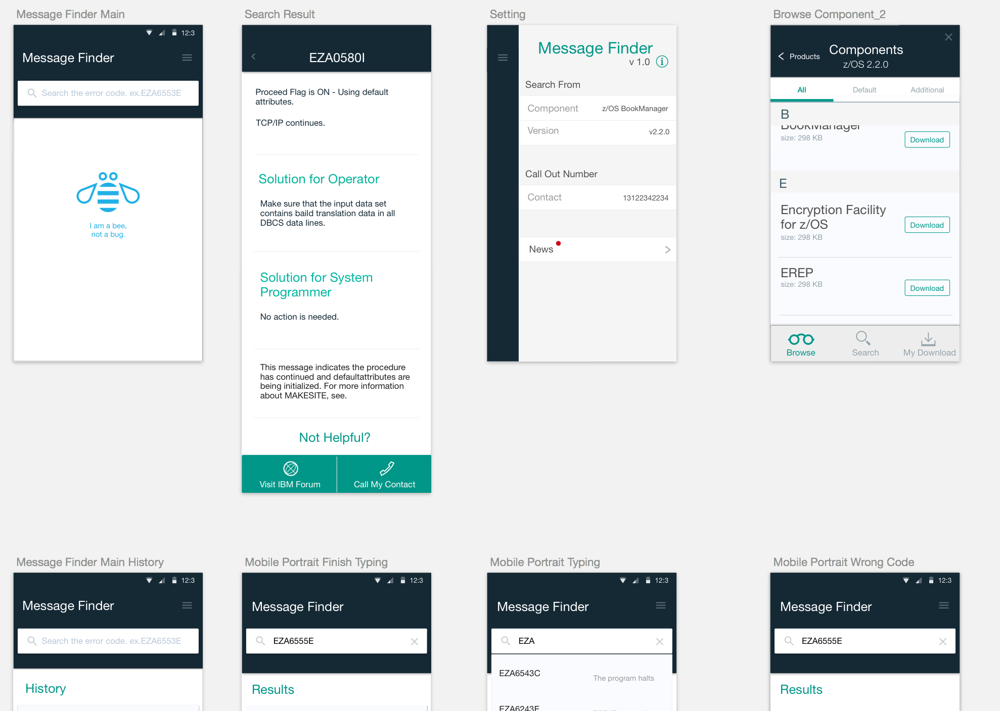
I also produced detailed annotations for handoff, making behaviours and edge cases explicit for developers. By that point, the team had fully shifted direction — the original mockup was no longer part of the conversation, and everyone was aligned around building the right thing.
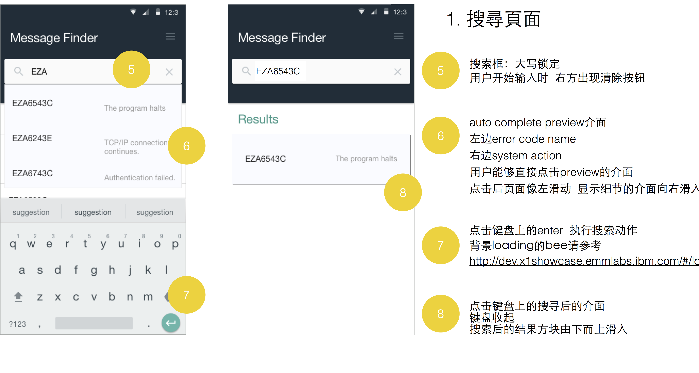
I was also responsible for producing the internal campaign video — from writing the script to directing the shoot.
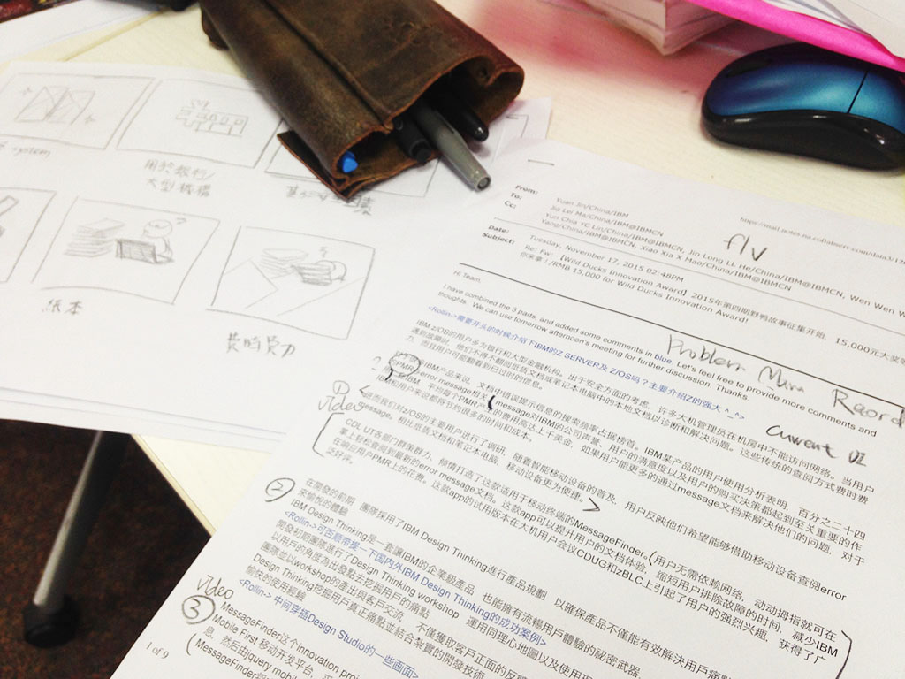
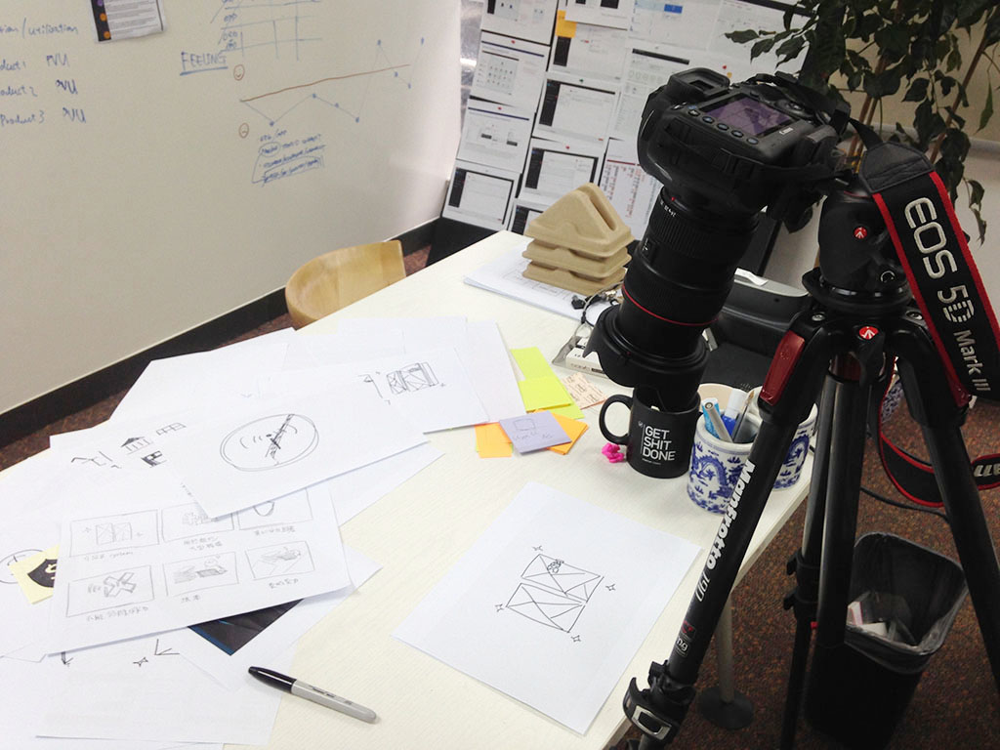
"What should we do next?"
— Tech Lead
By the end of the project, the question was no longer "make it better" — but "what should we do next?" This reflected a deeper shift: design was no longer treated as an execution step, but as a driver of direction.
The app was successfully launched on the App Store and Google Play, marking a key milestone for the team. It was also recognised by senior stakeholders, reinforcing the value of the approach.
"A great milestone for our z Systems product documentation."
— VP, zSystem Software · IBM
"A very impressive tool. This will be well received by tech sellers and customers alike."
— z Software Technical Sales Leader
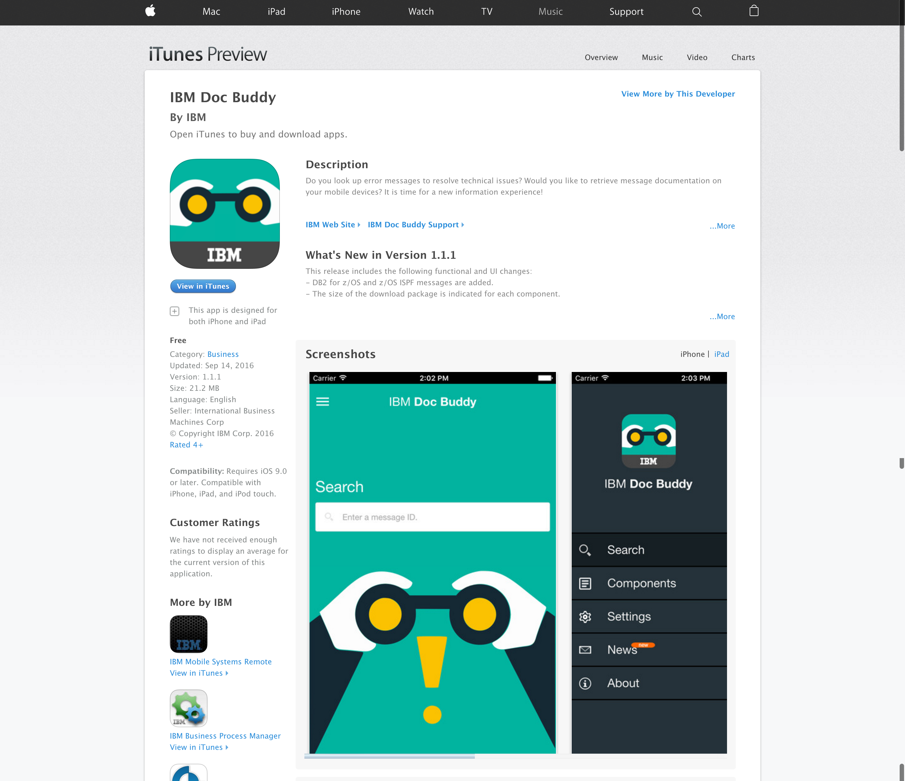